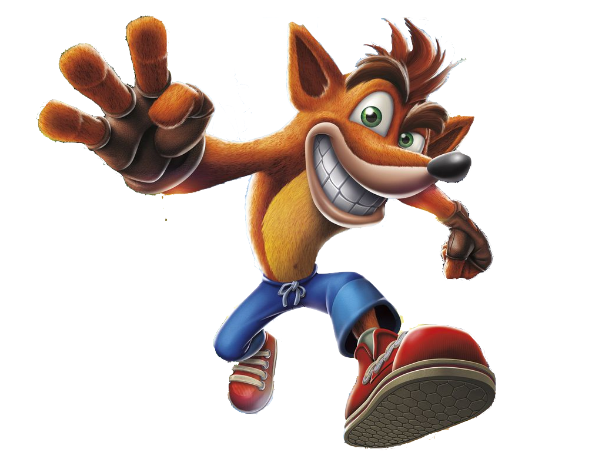

Crash Bandicoot (known in Japan as クラッシュ・バンディクー Kurasshu Bandikuu) is the main protagonist of the Crash Bandicoot series. Originally planned to be named Willie the Wombat, he is an Eastern Barred Bandicoot living on N. Sanity Island, who was captured and evolved by Doctor Neo Cortex. Throughout the series, Cortex is Crash's usual arch-enemy and is always defeated by Crash in order to keep peace around the island. Crash is often accompanied by his ally, Aku Aku, the series deuteragonist. In the earlier games, he tended to say "Whoa!" whenever he got killed. In the later games, he spoke gibberish with a very basic knowledge of the language spoken in the game.
Coco Bandicoot (known in Japan asココ・バンディクー Koko Bandikuu) is a major character in the Crash Bandicoot series and is the highly intelligent and spirited younger sister of Crash Bandicoot. She often aids her big brother by building gadgets ideal for the situation or even tagging along with him in his journeys, using self-taught martial arts to defend herself. She first appeared in Crash Bandicoot 2: Cortex Strikes Back, and her first appearance as a playable character was in Crash Bandicoot 3: Warped. Since then, she has appeared in every Crash game.
Just as her brother was, Coco was an ordinary Bandicoot until she was taken from the jungle and genetically enhanced by Doctor Nitrus Brio and Neo Cortex. It is unknown how she came to live with Crash afterward as she was not seen in the first game stating how Crash and Tawna were created.